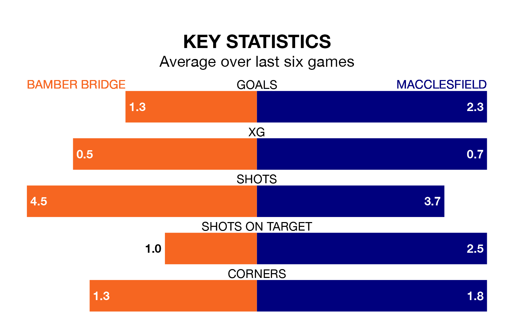

Macclesfield are strong favourites to take all three points despite Bamber Bridge's home advantage in Tuesday's late match at the Sir Tom Finney Stadium.
*Betting Company* are offering odds of 1.55 on Macclesfield sealing the win, with the visitors sitting second in the Northern Premier League table.
Bamber Bridge, who are 17th in the league and 33 points behind Macclesfield, are priced at 4.33 to win. A draw is set at 4.2.
With 77 goals in 35 games so far this season, Macclesfield are the league's third-highest scorers with 2.2 goals per game. And they are conceding fewer than average, letting in 41 goals at a rate of 1.2 per game.
Bamber Bridge, meanwhile, are average scorers, with 1.6 goals per game. They have conceded 2.0 goals per game.
The hosts are in bad form in the Northern Premier League, with one win and five losses from their last six games.
With five wins and one loss over that period, the away team's form is much better – they have taken 15 points from 18, compared to Bamber Bridge's three.
Over the last two years, Bamber Bridge and Macclesfield have played each other twice. Macclesfield won both of them.
Their last meeting was on February 3, when Macclesfield won 2-1 at home.
Bamber Bridge's last match was on Saturday, a 3-1 loss against Ashton United.
Macclesfield beat Hyde United 3-1 last time out, on April 1.
Updated: 11:20 (UTC), 09/04/24